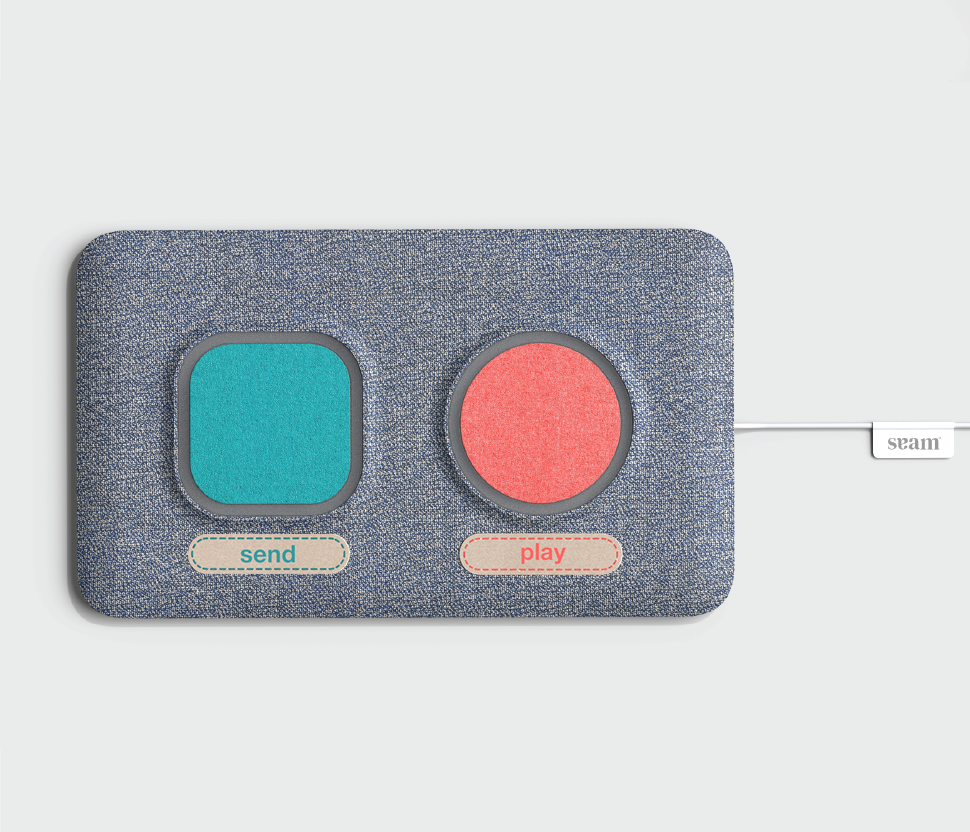
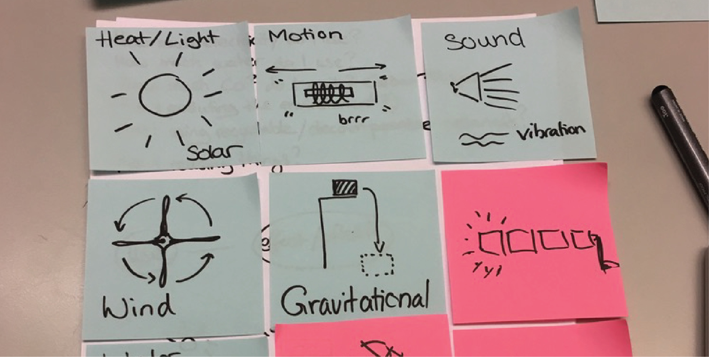
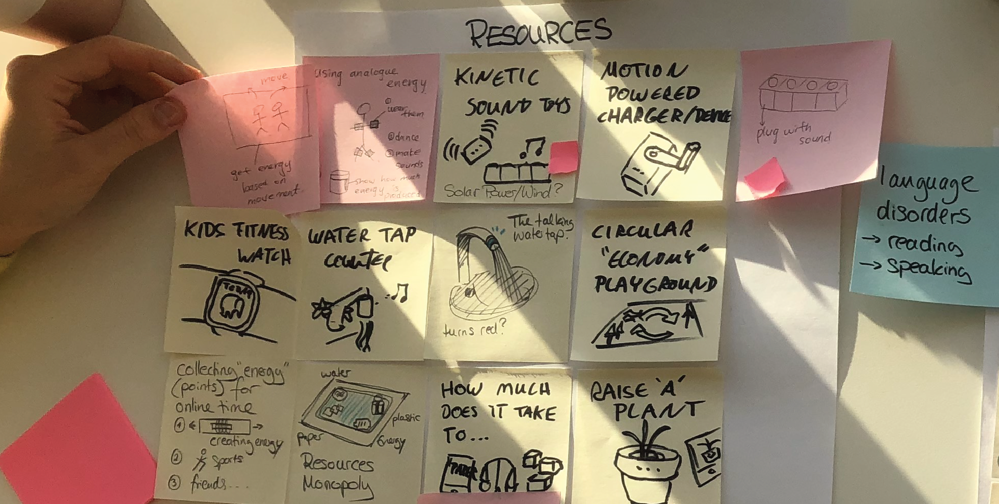

Remote Group Project done for 10 weeks in spring of 2020 with Oliver Weglinski and Anna Puchalska along with Microsoft Design Expo 2020
So Heum Hwang
about
playground
works
Seam
Seam is a setup consisting of a portal and camera that is linked to the TV that users with Alzheimer's can use to connect with their loved ones in the digital world. They can share memories together by sending photos and voice messages and also connecting synchronously by having a video call that contains various digital activities.

Participatory Design, Remote Working, Service design, UX/UI design, Filmmaking, Storytelling
Remote Research : Zoom & Miro
UI : Figma & Illustrator
Video : After Effects & Premiere Pro
How might we promote remote togetherness between users with Alzheimer's & caregivers?
Key Components

CONNECTION PORTAL
With Seam, Alzheimer's individuals and their loved ones can enjoy different activities although they might be physically apart. By pressing the PLAY button on the connection portal, their loved ones show on the TV via a web camera installed, while the loved ones are connecting with their mobile app.
When they are not connecting live, they can still send each other voice messages to keep in touch. By pressing the PLAY button, Alzheimer's individuals can listen or see photos of what others have sent and send a reply back.
Design Process: Discover
Our project started with a stakeholder map that examines this current global pandemic situation with COVID-19. Since there were already new products and services for COVID-19, we wondered if there are marginalized sectors in the medical field other than COVID. Thus, we interviewed patients, doctors and medical staff who are involved in non-COVID fields. Interviews were conducted online which allowed us to reach people all over the globe.
In order to practice remote user interviews, we developed an ethnographic kit that allowed us to better examine user's daily lives through online. This kit was used to facilitate interviewers to better understand interviewees, despite of lack of physical interaction that was used to be present in a standard interview.
Interviewees were asked to record their daily lives through photos and send it beforehand. With this, we drew journey maps that was used as materials during the interview.
On the journey map we prepared in advance, interviewees were given cards such as "HELL & HEAVEN CARDS" or "WHAT IF? FRAMES" to place on it and further explain about it.
We picked out main objects that were crucial in interviewee's lives and they were asked to place them according to different categories, such as "Before COVID" and "After COVID".
With the interviews, we discovered how COVID-19 was changing the original meaning of care and treatment. Doctors and nurses were losing physical contact and closeness they used to develop with their patients. With the fear of going outside home, patients started not to go to regular checkups or therapy treatment appointments. Inside homes, problems occured in family relationships since people were spending more time inside together.
"Children from dysfunctional backgrounds seek physical touch, but now this isn't possible."
_Ergotherapist in Germany
"It is hard to continue mental therapies through Zoom, it feels weird because you cannot feel the reaction of other people."
_Transperson going through therapy sessions
"I love my family but enough is enough. I need some time alone and I can't live in this chaos anymore."
_Student in Korea
Design Process: Define
through physical contact in this remote context?
There is a remarkable change that we can notice in terms of care. Among them, how can we


